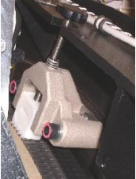
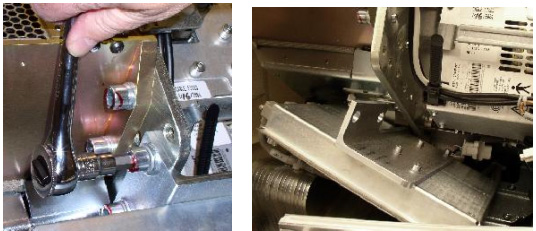
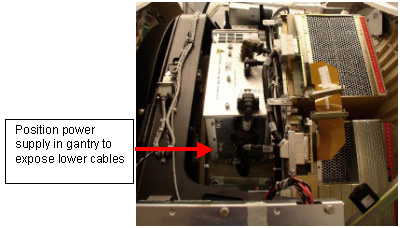
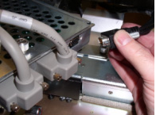
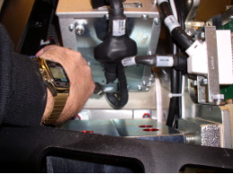
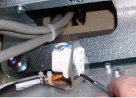
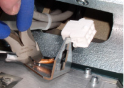
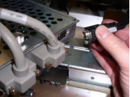
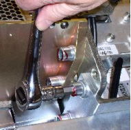

Operating Documentation
Direction 5193891-800, Rev# 5
LightSpeed 5.X Pro16 Limited Access Service Information (Adv)
Operating Documentation |
| Required Persons | Preliminary Reqs | Procedure | Finalization |
|---|---|---|---|
| 1 | Timing Not Applicable | 45 mins | 10 mins |
The analog GDAS power supply is mounted on the rotating Gantry. Looking through the gantry from the table end, the analog power supply is removed from the left side of the gantry.
| NOTE: | All left/right orientation in this procedure is based on the viewpoint of an individual looking through the gantry opening, from the table end. |
| Last Revised: | March 15, 2005 |
| Item | Qty | Effectivity | Part# | Manufacturer | |
|---|---|---|---|---|---|
| Torque Wrench | 1 | - | - | - | |
| Standard FE Toolkit | 1 | - | - | - | |
| Insulated “Tweaker” Adjustment Tool (6-inch length) | 1 | - | - | - | |
| 12” 10mm Hex Allen (part of System Service Kit) | 1 | - | - | - | |
| Item | Qty | Effectivity | Part# | Manufacturer | |
|---|---|---|---|---|---|
| DAS Analog Power Supply | 1 | - | GEMS-GE | ||
| ELECTROCUTION HAZARD. | |
| HIGH VOLTAGE PRESENT. | |
| Use proper lockout/tagout procedures before replacing the components. |
| CRUSH HAZARD. | |
| UNEXPECTED GANTRY ROTATION CAN CAUSE SERIOUS INJURY. | |
| Never service the gantry with the axial drive enabled. |
| Potential for Injury to Service Personnel. | |
| Each Power Supply Chassis Weighs Nearly 30 Pounds. | |
| Depending on your height, a step stool may be required to reach over the TGP for PS removal and installation. Use your judgement to determine if a second person may be required to assist with removal and installation. |
| Burn Injury Possible. | |
| Power Supply May Be Hot to Touch. | |
| Use caution to prevent possible burn injury from hot surface contact. |
| Follow ALL required safety and PPE procedures customary for your organization, when working on this product. | |
| Do not use a large screwdriver to tighten the cable Jackscrews. These need only be finger tight. If access does not allow for hand tightening then use a small screwdriver and just snug them up. Excessive torque will damage the jackscrew and/or Receiver Hex and Stand-off. | |
| Condition | Reference | Eff |
|---|---|---|
Do not remove both supplies together. If both supplies require replacement, you must first swap one supply and then change the other. | - | - |
Only trained service personnel should service the GE CT Scanner. | - | - |
Position the table to its lowest position, fully out of the gantry.
Remove gantry covers as required.
Refer to Parts Replacement → Gantry → Enclosure → (Cover Removal Procedure).
| ELECTROCUTION HAZARD. | |
| HIGH VOLTAGE PRESENT. | |
| Use proper lockout/tagout procedures before replacing the components. |
Rotate the gantry to access the analog DAS power supply on the right side (same side as Service Switches).
| NOTE: | When removing the Analog supply, the Onboard Rotational Processor (ORP) chassis will need to be shifted out of the way by removing the two M12 bolts that hold the ORP chassis to the DAS plate. |
From the RIGHT side of the gantry, (Same side as ORP), turn OFF:
Axial Drive switch.
HVDC Switch.
120VAC Switch.
Use the Index Lock to lock the gantry. See Illustration 1.
Illustration 1: Index Lock

Loosen and remove the bolts holding the ORP. See Illustration 2.
Illustration 2: Loosen and Remove Bracket Bolts Holding ORP

Unlock the Index Lock and slowly rotate the gantry to access the DAS power supply on the left side (same side as TGP). Make sure it is in a position to remove the connectors and cables on the bottom of the supply first. See Illustration 3.
Illustration 3: Analog Power Supply Rotated to Left Side of Gantry

Use the Index Lock to lock the gantry. See Illustration 4.
Illustration 4: (Safety) Index Lock

| NOTE: | If you are 5.5 feet, (1.6m) or shorter, it may be easier to slightly rotate the gantry at times, to make the removal of cables, connectors and harnesses easier. |
Remove black cable from ORP J2. See Illustration 5.
Illustration 5: J2 OF ORP

Remove the cable Clamp from the Analog Power Supply output. See Illustration 6.
Illustration 6: Harness Cable Clamp

Remove the Male Mate-N-Lok connector and remove the female part of the Mate-N-Lok connector from the bracket. See Illustration 7.
Illustration 7: Mate-N-Lok Connector Removal

If necessary, remove the tie-wrap holding the cable to the bracket. Move the cable out of the way. (This tie-wrap does not need to be replaced.) See Illustration 8.
Illustration 8: Remove Tie-wrap

Disconnect J1, J2 and J3 on the power supply. Move cables out of the way.
Disconnect J110 of the LEFT DAS chassis and any harness brackets with captive screws. Move cables out of the way.
| NOTE: | In the next steps the power supply will be removed:
|
| Burn injury possible. | |
| Power supply may be hot to touch. | |
| Use caution to prevent possible burn injury from hot surface contact. |
Remove the top cover of the analog power supply, (7 captive screws) Loosen the 3 captive screws holding the fan tray assembly (1 on top and 2 on the side). These are all combination heads of Torx and medium straight screwdriver. The Fan tray bottom screw on the side of the Analog power supply can be hard to get to. Use a 4mm hex wrench,T30 Torx wrench or short flat blade screwdriver to loosen these captive screws. Disconnect the Fan tray power plug and pull out the fan tray.
Illustration 9: Disconnect the Fan Power Plug - Remove the Fan Tray

Loosen the lower two mounting bolts that are used to mount the power supply to the rotating base.
Illustration 10: Loosening Lower Power Supply Bolts

| NOTE: | After loosening the lower bolts, it may be easier to access and remove the upper bolts by rotating the gantry. Once rotated, make sure the power supply has clearance from the stationary frame to be lifted out of the gantry prior to locking gantry rotation. |
| CRUSH HAZARD. | |
| UNEXPECTED GANTRY ROTATION CAN CAUSE SERIOUS INJURY. | |
| NEVER SERVICE THE GANTRY WITH THE AXIAL DRIVE ENABLED. |
Loosen the upper two mounting bolts.
Remove the analog power supply assembly from the gantry by grabbing the handle in one hand and the lower side of supply in other, to steady it.
Illustration 11: Removing the Power Supply

Remove the cover of the replacement power supply and remove the fan tray.
Re-install bulkhead bracket. See Illustration 7.
Insert the new power supply into the gantry. Take advantage of the guide pins on the rotating base to hold the new power supply in position.
Tighten all 4 bolts to the specified torque setting shown in Table 1.
Table 1: Torque Values
| 66.4 N-m | 49 lb-ft | 588 lb-in | 677 kg-cm |
| Do not use a large screwdriver to tighten the cable Jackscrews. These need only be finger tight. If access does not allow for hand tightening then use a small screwdriver and just snug them up. Excessive torque will damage the jackscrew and/or Receiver Hex and Stand-off. | |
Re-insert the Fan Tray and secure with its captive screws.
Reconnect the Fan Tray power connector.
Check the terminal connections on each fan. Make sure they did not come loose.
Reinstall the power supply cover.
If necessary, rotate the gantry. Reconnect cable J110 on the LEFT DAS chassis.
Reconnect the cabling harness and harness clamps (Captive Screws) to the GDAS chassis. Make sure all cable clamps are secure.
If necessary rotate the gantry. Reconnect J1, J2, and J3 to the power supply.
If necessary, rotate the gantry to gain access to the bottom of the power supply.
Re-install the Mate-N-Lok connector into the bulkhead bracket.
Route all the harnesses and cables through re-usable Cable clamps and secure the cable clamps.
Release the Index Lock and safety equipment.
Slowly rotate the gantry, positioning the analog power supply on the RIGHT side of the gantry.
Reattach the J2 on the ORP assembly. See Illustration 12.
Illustration 12: Reconnect J2 OF ORP

Reattach ORP chassis.
Illustration 13: Reattach ORP Chassis

Tighten the two M12 ORP Mounting bolts to the rotating base as specified in Table 2.
Table 2: Torque values
| 66.4 N-m | 49 lb-ft | 588 lb-in | 677 kg-cm |
| POSSIBLE EQUIPMENT DAMAGE. | |
| SERVICE ACTION REQUIRED REMOVAL OF EITHER ROTATING OR STATIONARY GANTRY SUB-ASSEMBLIES. MAKE SURE GANTRY FREELY ROTATES WITHOUT INTERFERENCE. | |
| NEVER SERVICE THE GANTRY WITH THE AXIAL DRIVE ENABLED. |
MANUALLY rotate the gantry several times while inspecting the cables removed, to make sure that they are properly secured to the rotating side of the gantry, and are not loose or interfering with rotation.
| POTENTIAL FOR SHOCK. | |
| VOLTAGE IS PRESENT. | |
| Failure to use an Insulated voltage adjustment "Tweaker" can result in personal injury and/or component damage. |
Adjust 5V supplies output, if necessary. Refer to GDAS Power Supply Adjustment procedure for instructions.
Replace all covers.
Perform a basic scan to ensure the system is functioning normally.